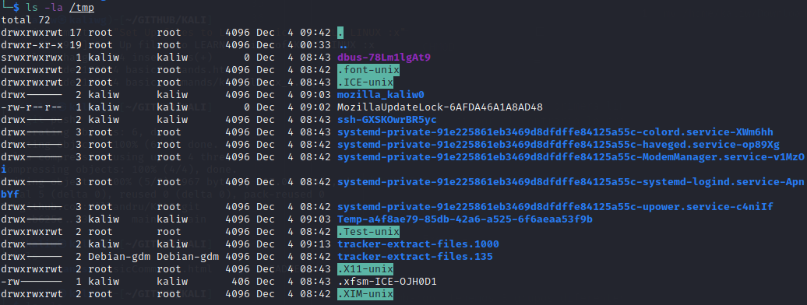

¿Qué que aprenderemos:🦂 💻💻?
USUARIOS & PRIVILEGIOS
- chmod
- adduser
- /etc/passwd, /etc/shadow
- su
- sudo
🍁 chmod
:: Entonces, si miramos a la primera linea y vemos un dash "-" , significa que el archivo es un "file", si por el contrario lo primero que aparece es una "D", significa que es un "Directorio".
Luego tenemos las letras r, w, x
- Read
- Write
- Execute
Sin embargo, tenemos 3 grupos diferentes de usuarios
- Primer usuario: EL propietario del archivo || The owner of the file
- Segundo usuario: Los usuarios que poseen el archivo
- Tercer usuario: Todos los usuarios en general
::Cuando hacemos penetrationi testing, usualmente vamos a estar buscando tener acceso completo al archivo o carpeta de interes. Ahor, tipicamente estaremos mirando en este folder llamado /temp/ y mirrar que tipo de permisos tienen este folder, ya que cuando estemos haciendo algun tipo de exploit, vamos a querer guardar nuestros scripts en este folder , pues es aquí donde prodremos ejecturar esos archivos..